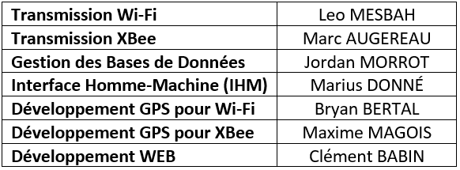

VELA Tracking, est un projet de BTS SN-IR, de 13 semaines, qui va permettre de pouvoir visualiser la course d'une régate en temps réel mais aussi de pouvoir la voir en différée sur un site internet.
Mais pourquoi faire ce genre de projet alors que d'autres systèmes fonctionnent pour le suivi d'une course de régate ?
Pour la simple est bonne raison, que les autres systèmes s'appuient la technologie GPS/GPRS, et l'abonnement de ces technologies sont très onéreux.
Nous devons mettre en place une technologie qui va nous permettre de récupérer les positions de chaque bateaux et balises, tout en ayant la vitesse
à laquelle les bateaux naviguent, et que ces informations soient envoyées au directeur de course pour que celui-ci puisse superviser la course.
Pour ce faire, nous utiliserons, afin de récupérer les coordonnées de chaque bateaux, la technologie GPS, puis pour l'envoie des informations à un autre bateau, nous utiliserons 2 technologies, la technologie Wi-Fi et la technologie XBee.
